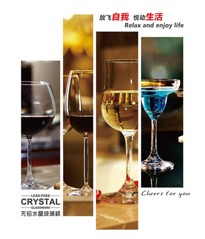
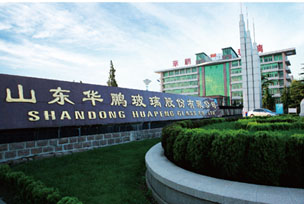
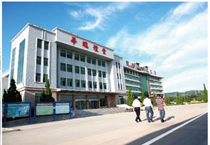

公司简介

山东华鹏玻璃股份有限公司是国内日用玻璃行业十强企业之一，下设华鹏玻璃（菏泽）有限公司、辽宁华鹏广源玻璃有限公司、安庆华鹏长江玻璃有限公司、山西华鹏水塔玻璃制品有限责任公司、江苏石岛玻璃有限公司、甘肃石岛玻璃有限公司、上海分公司等，专业从事各类中、高档玻璃器皿和玻璃瓶罐的研发、生产和销售。公司先后获“ 中国轻工业日用玻璃行业十强企业”、“中国玻璃高脚杯王牌企业”、“全国日用玻璃行业功勋企业”、“中国包装百强企业”、“省级先进企业”等多项荣誉称号。
公司设备先进，工艺领先，技术力量雄厚，主要的制瓶、制杯生产线及配套在线自动检验机等设备，大部分系引进美国、意大利、德国、法国和比利时的先进设备，均达到国际先进水平，是国内设备装备水平和生产技术水平较高的厂家之一，拥有“省级企业技术中心”和“省级玻璃器皿工程技术研究中心”，科技研发和创新能力位居全国同行业前列，有37种玻璃器皿产品获国家知识产权局颁发的外观设计专利证书，产品质量达到国内领先水平和国际先进水平。主导产品“石岛”牌高档水晶杯、无铅水晶杯、机制一次成型酒杯，行销全国并出口韩国、日本、美国、加拿大、俄罗斯等多个国家和地区，是麦德龙、沃尔玛、家乐福、好又多等国际知名连锁超级市场主要供应厂家，机制一次成型高脚杯产品销量和市场占有率连续多年居全国第一位。无铅水晶杯被北京人民大会堂和北京钓鱼台国宾馆选为国宴用杯。“石岛”牌高档葡萄酒瓶、大香槟酒瓶、饮料酒类瓶、罐头食品瓶、医药包装瓶等八大系列数百个品种，为张裕、威龙、中粮、长城、王朝、汇源果汁、青岛啤酒、燕京啤酒、宁夏红等知名企业所用， “石岛”牌玻璃制品自1999年以来，连续被评为“山东名牌”产品、“山东省著名商标”、“山东省旅游商品十佳品牌”和“中国包装优秀品牌”。


版权所有© 2014 山东华鹏玻璃股份有限公司 技术支持：中企动力 Copyright © 2014 huapengglass.com All Rights Reserved 鲁ICP备14003878号